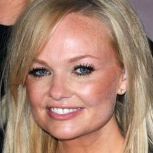

Where are They Now?

Victoria / Posh Spice
- Relationship Status:
- Victoria married David Beckham on July 4, 1999
- Children:
- (4) Brooklyn Joseph, Romeo James, Cruz David, and Harper Seven.
- Solo Albums:
- Victoria Beckham (2001)

Melanie C / Sporty Spice
- Relationship Status:
- Single
- Children:
- (1) Scarlet.
- Solo Albums:
- Northern Star (1999), Reason (2003), Beautiful Intentions (2005), This Time (2007), The Sea (2011), Stages (2012)

Melanie B / Scary Spice
- Relationship Status:
- Married to Stephen Belafonte for 7 years.
- Children:
- (3) Phoenix Chi Gulzar (father Jimmy Gulzar), Angel (father Eddie Murphy), Madison Brown Belafonte (father Stephen Belafonte).
- Solo Albums:
- Hot (2000), L.A. State of Mind (2005)

Emma / Baby Spice
- Relationship Status:
- In a relationship with singer Jade Jones since 1998.
- Children:
- (2) Beau Lee Jones, and Tate Lee Jones.
- Solo Albums:
- A Girl Like Me (2001), Free Me (2004), Live in Mono (2006)
Geri / Ginger Spice
- Relationship Status:
- Married Christian Horner on May 15, 2015.
- Children:
- (1) Bluebell Madone (father Sacha Gervasi).
- Solo Albums:
- If Only (1999), Just for the Record (2002), Ugenia Lavender (2008)